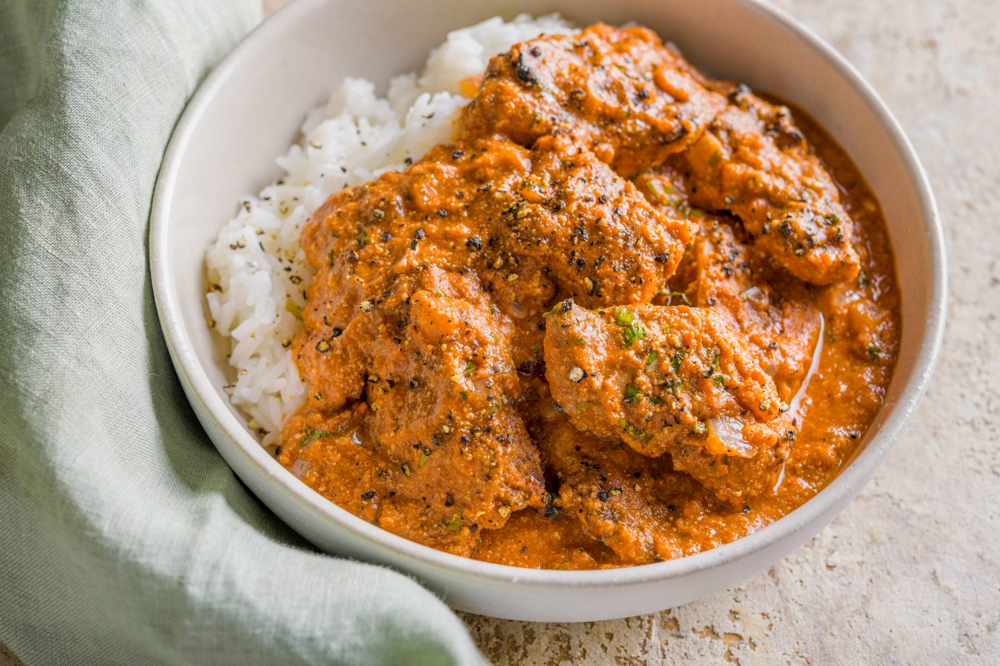

Butter Chicken Recipe
This butter chicken recipe by Chef Varun Inamdar is simple yet heavenly variation on the cuisine

Description
A simple yet tasty recipe for the most popular indian cuisine the Butter Chicken. Serves 4-5 people.
Ingredients
For the chicken
- boneless chicken breast
- 1 tbsp Ginger garlic paste
- 1 tbsp Red chilli powder
- 1 tbsp salt
For the gravy
- chopped tomatoes
- chopped onions
- cashews
- 1 tbsp garlic paste
- 1 tbsp kasoori methi
- 1/2 tbsp garam masala
- 4 tbsp sugar
- 2 tbsp kashmiri chilli powder
- 5 tbsp butter
- 3 tbsp cream
- 2 tbsp malt vinegar or 1 tbsp White Vinegar
- 1 tbsp salt
Directions
- Mix and Marinate the chicken with all of the ingredients for it, keep it aside for 15 to 20 minutes.
- In a heated pan, add oil and fry the chicken.
- In the same pan, add butter, tomatoes, onions and cashews.
- Add water, garlic paste, salt, malt vinegar, sugar, garam masala powder and chilli powder, mix everything and let it simmer for 15-20 minutes.
- Churn the mixture into a fine puree using a hand blender.
- Strain the puree back into the same pan.
- Add Butter, cream, chicken and kasoori methi and let it simmer for 5-7 minutes.
Serve
Now you can starting plating the dish. Garnish it with cream and and a sprinkle of kasoori meethi. Serve with rice or naan and enjoy!